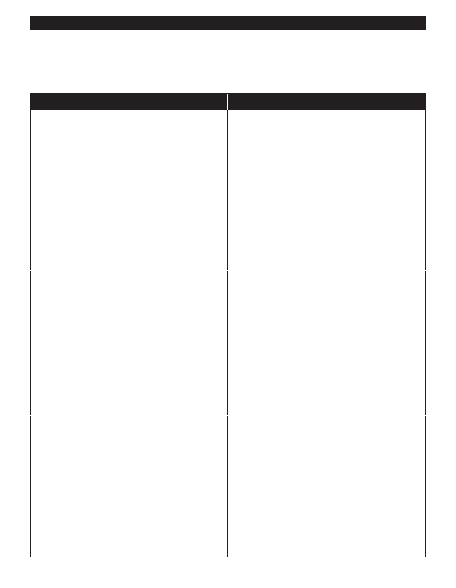

PA RT I C I PA N T R E S O U R C E G U I D E
Common Refrigerator Problems and Solutions
(continued)
Problem
Solution(s)
Food is not cold enough
1. Airflow across condenser coils may be blocked.
Vacuum the condenser coils.
2. The defrost timer may be broken; see page 85.
3. The thermostat control may be faulty. To replace the
thermostat control, see page 84.
4. The compressor may have stopped working properly.
However, the compressor and motor are mounted
inside a sealed container. Replacing either is a job
for an appliance professional. Generally the cost of
replacing a failed compressor far exceeds the value of
the refrigerator.
5. The condenser may be faulty. The condenser is the
coil on the outside of the refrigerator and it is sealed.
Replacing it is a job for an appliance professional.
Standing water in the bottom of the refrigerator
1. The door may have been left open. Ask the resident if
the door might have been inadvertently left open for a
period of time before completing unnecessary work.
2. Check for a jammed or bent blade on the evaporator
fan.
3. The drain may be plugged. Clean out the ports to the
drain pan with warm water or flexible tubing.
4. The door gasket may be weak or broken. See page 83
for instructions on replacing it.
5. The defrost timer may be broken; see page 85.
6. If you suspect the refrigerator is low on refrigerant, it’s
time to replace it or call an appliance specialist.
Ice-maker not working
1. The buildup of lint under the unit can really impact the
refrigerator’s performance. Clean the lint with a special
brush designed for the job.
2. Check to be sure the water supply is turned on to the
refrigerator.
3. Check for kinks or blockage in water line and remove
them.
4. Check the freezer temperature. It should be between
0 – 8˚F. If it is above 10 – 12˚F, the ice maker may
not work.
5. The fill valve may be faulty. See page 86 for instructions
on replacing it.
81